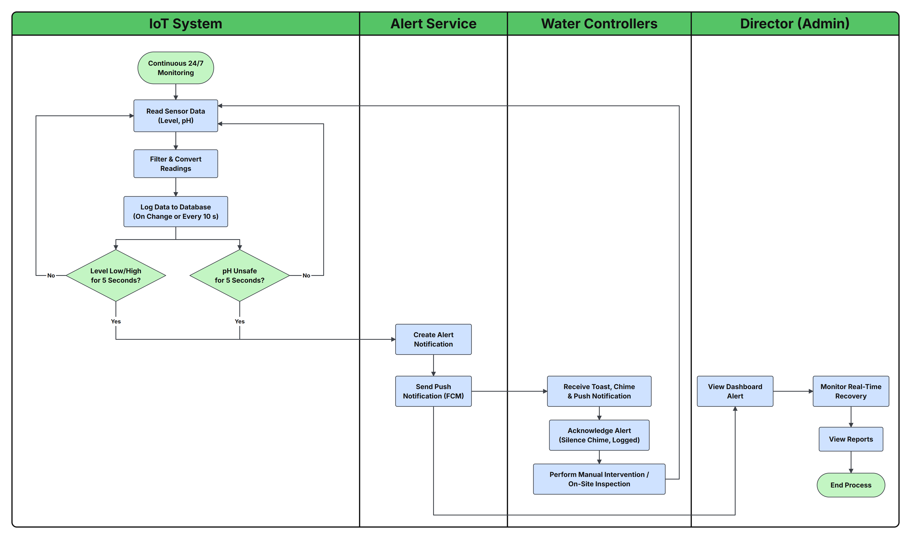
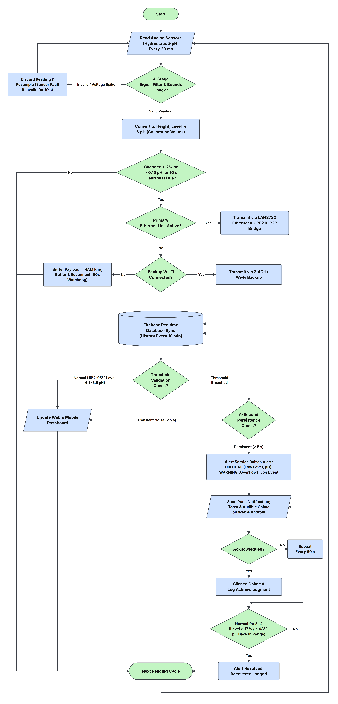
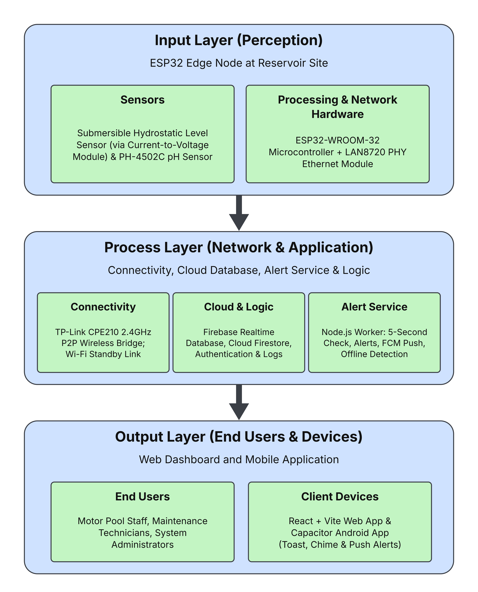
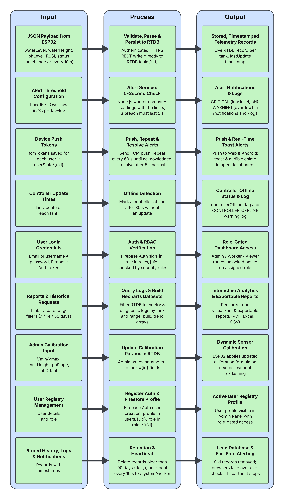
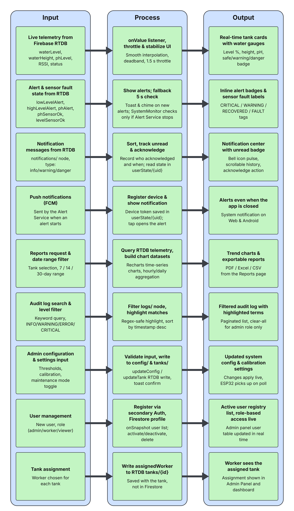
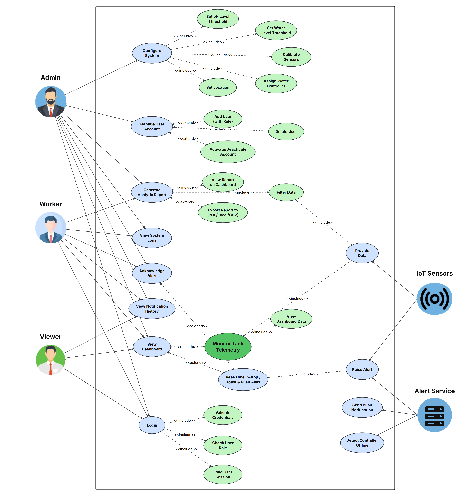
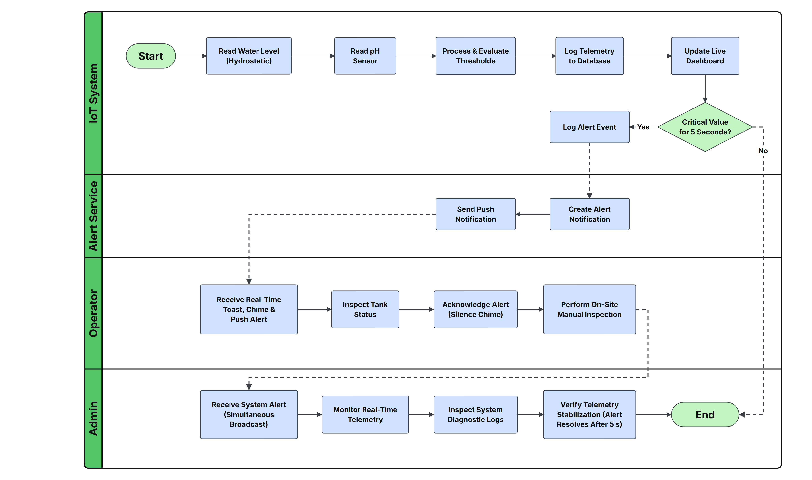
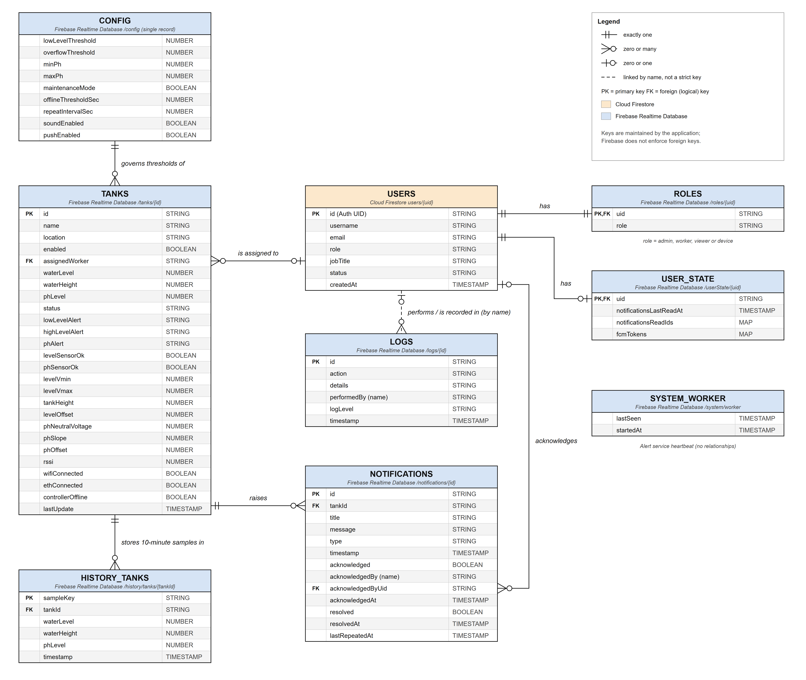
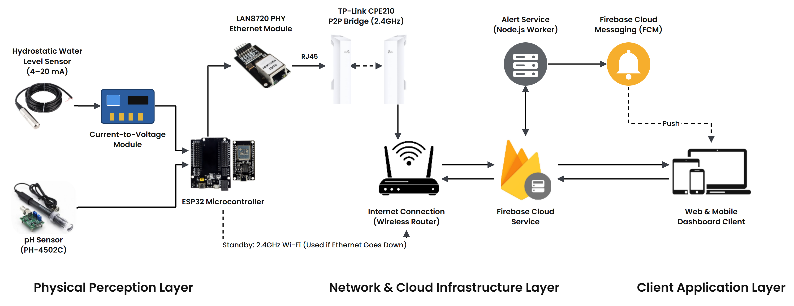
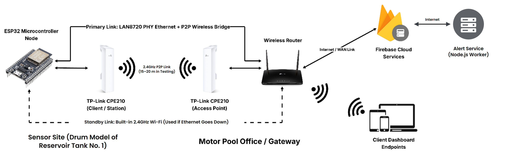

Figure 3-4: Proposed Operational Workflow of MPWSD



Figure 3-5: System Data Processing and Logic Flowchart



Figure 3-6: Hierarchical Input-Process-Output (HIPO) Model



Figure 3-8: Input-Process-Output (IPO) Model for Backend Server and Application Logic



Figure 3-9: Input-Process-Output (IPO) Model for Web Dashboard and Mobile Application



Figure 3-10: Use Case Diagram for the Water Level and Quality Monitoring System



Figure 3-11: Activity Diagram



Figure 3-12: Entity-Relationship Diagram (ERD)



Figure 3-13: Architectural Design of the System



Figure 3-14: Network Design Topology


